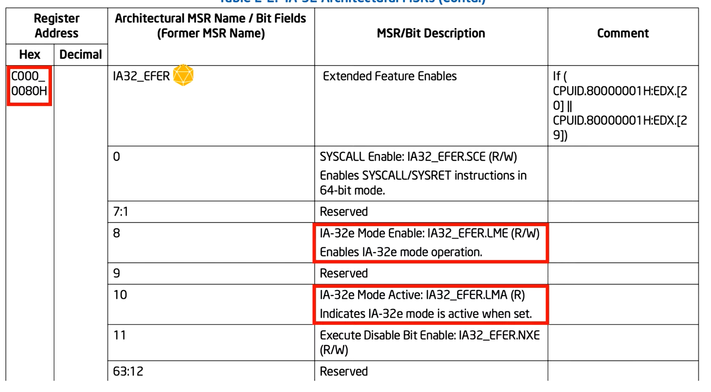

EFER - Extended Feature Enables Register
***Model-Specific Registers (MSRs) can only be set and accessed by privileged code running in Ring 0
this msr sets the LME bit, which enables 64 bit long mode

The IA32_EFER register is a model-specific register (MSR), which means it is directly accessible by software running in privileged mode (Ring 0) on x86 processors. As an MSR, it can be read and written by using special instructions such as RDMSR (Read MSR) and WRMSR (Write MSR).
To enable or disable the Long Mode Enable (LME) bit in the IA32_EFER register, software running in privileged mode (usually an operating system kernel) needs to perform a write operation to the IA32_EFER register. Specifically, the software sets or clears the LME bit depending on whether it wants to enable or disable long mode.
The sequence of steps to enable 64-bit long mode is typically as follows:- Check CPU Capability:
- Check CPUID Support: The operating system first checks if the CPU supports the CPUID instruction.
- Execute CPUID instruction with a specific function number in the EAX register. The function number determines what information the CPUID instruction returns.
- Check Feature Flags
- Determine Long Mode Support
- Proceed with Enabling Long Mode
- Enable PAE: If the CPU supports Physical Address Extension (PAE), the PAE mode is enabled by setting the PAE bit in the CR4 (Control Register 4).
- Set LME Bit: The operating system writes a value to the IA32_EFER register to set the LME bit (bit 8) to 1, enabling long mode.
- Transition to 64-bit Mode: After enabling the LME bit, the operating system performs a special operation (e.g., loading a long-mode Global Descriptor Table (GDT) and a long-mode code segment descriptor) to transition the CPU into 64-bit long mode.
- Execution in 64-bit Mode: Once the CPU is in long mode, it can execute 64-bit instructions and use 64-bit general-purpose registers.